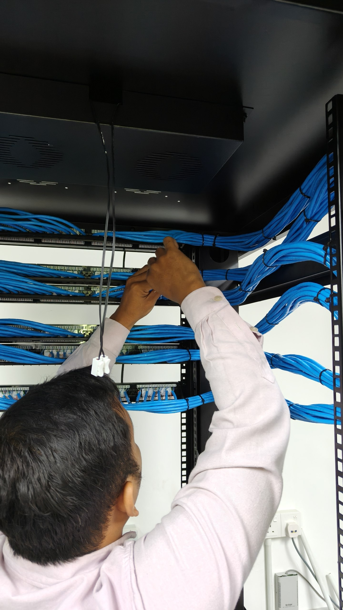
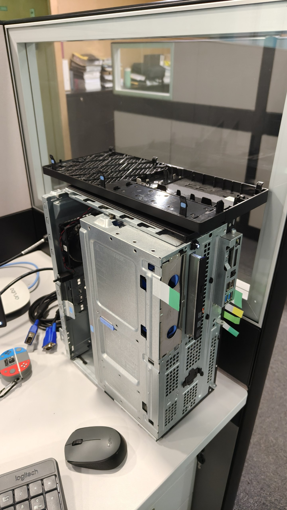

FlowDesk
View on GitHub ↗Dynamic requests and multi-tier approvals for HR and Finance workflows.
PHP / MySQL / JavaScript
From enterprise workflows to hands-on IT infrastructure and interactive learning. Practical work, documented through code and photographs.
Business applications and academic projects.
Explore the thinking behind each build.
Dynamic requests and multi-tier approvals for HR and Finance workflows.
Project coordination, approval handoffs, and visibility across nine departments.
Physical flashcards bring 15+ microorganisms into interactive 3D learning.
Desktop registration and membership tracking with a relational SQL database.

Hands-on Ethernet cable preparation, patch-panel termination, and cable routing during my internship.

Internship activities covering desktop hardware access, laptop cleaning, Windows recovery, and recovery USB preparation.
Workflow graphics illustrate system concepts. Explore the source repositories above or the internship photo galleries below.